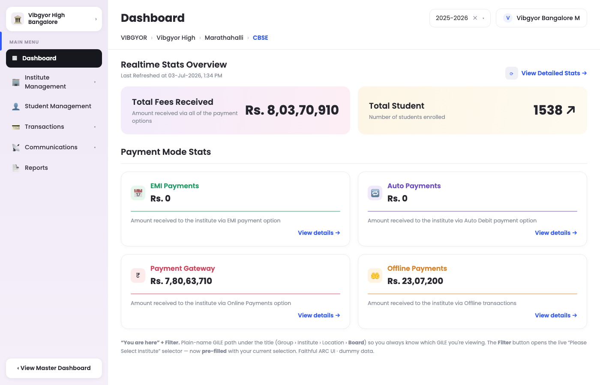
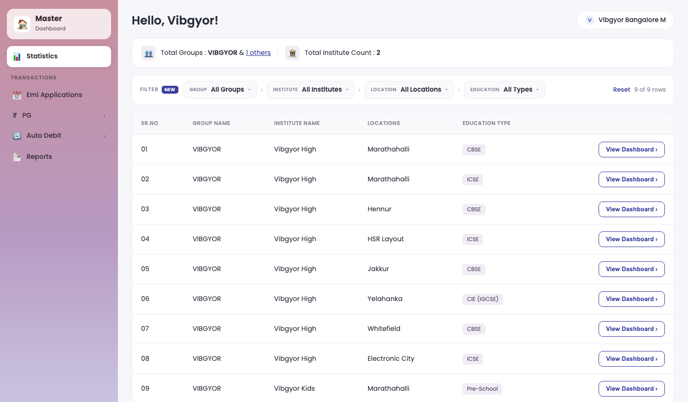
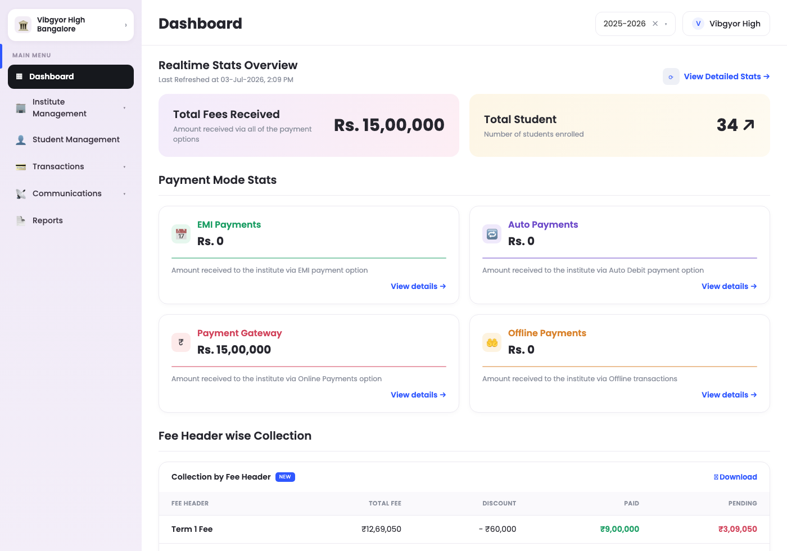
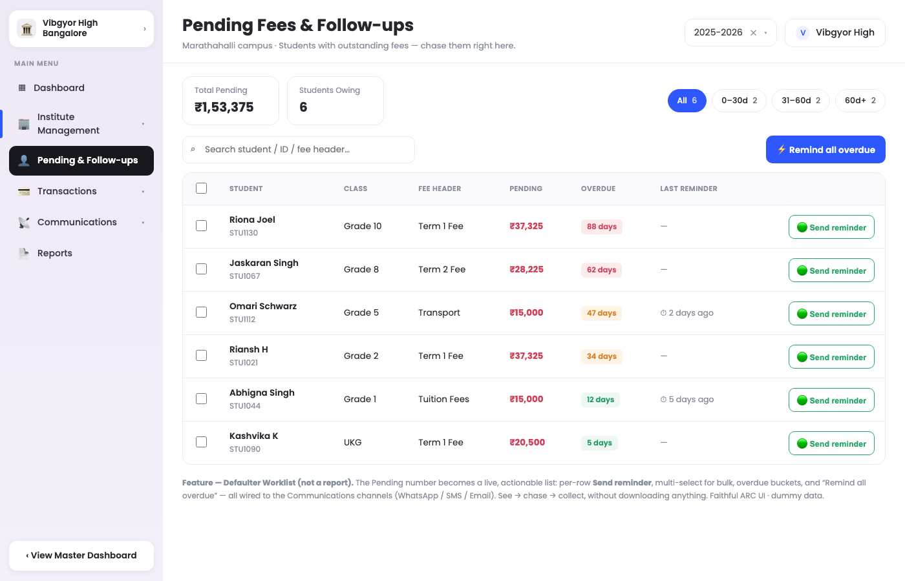
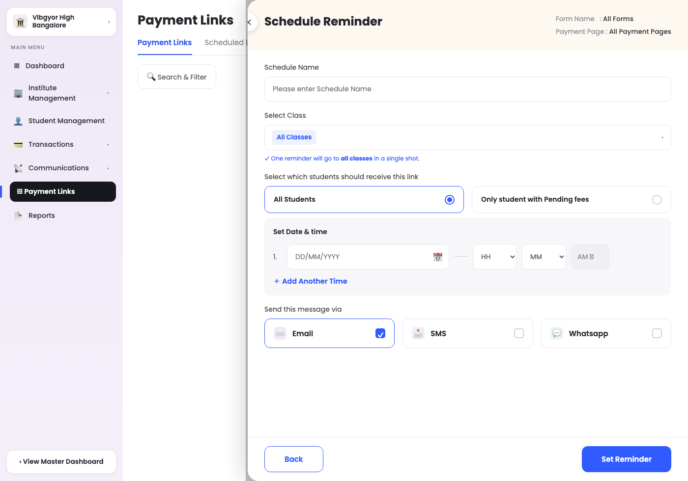
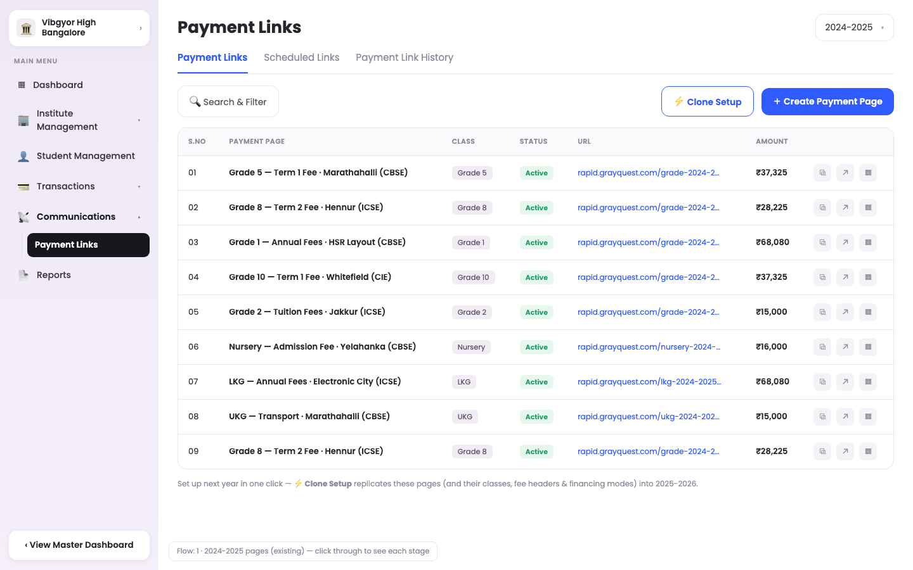
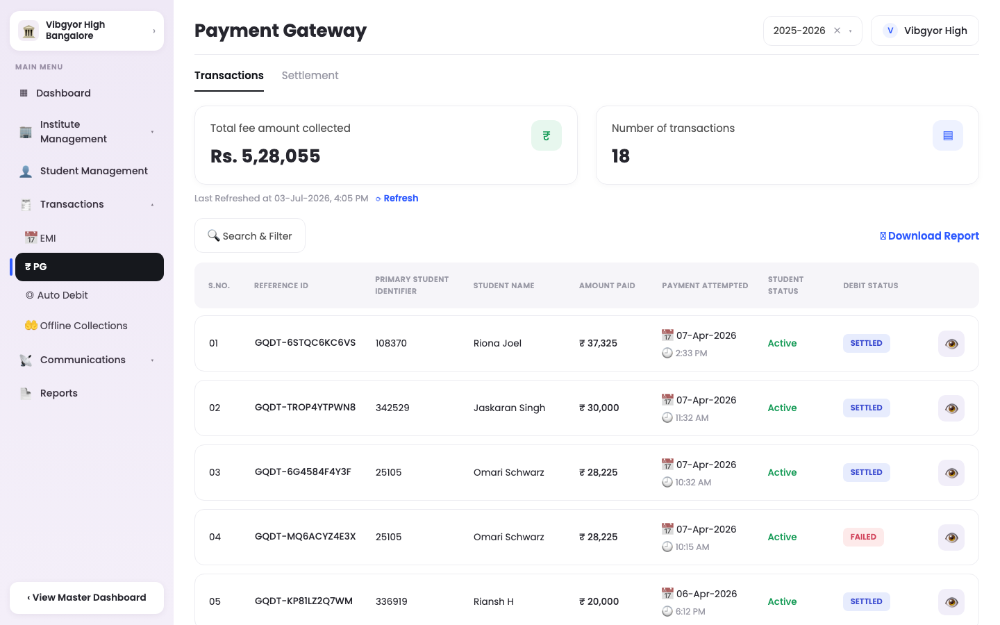
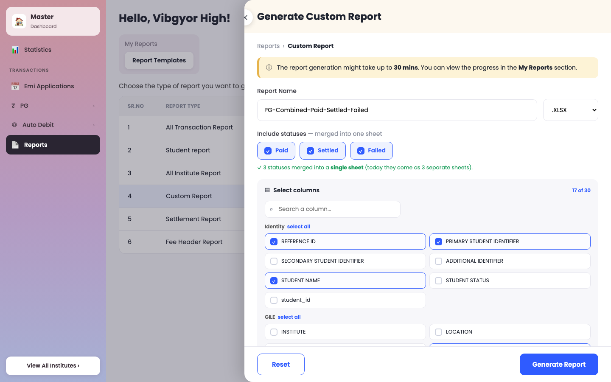
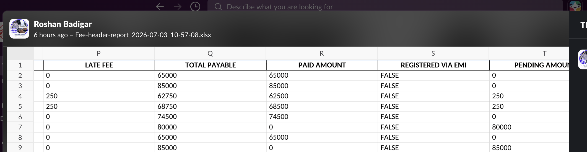

ARC-FMS — Feature Concepts & Prototypes
Research case: VIBGYOR — one of our heaviest EMI / PG / Auto-Debit institutes (37 campuses across Bangalore, Pune & Mumbai; CBSE / ICSE / CIE). Clickable prototypes on VIBGYOR data, with before / after snapshots and one verified data bug.

Live today — VIBGYOR (Bangalore Marathahalli) EMI Applications on the current ARC dashboard. The prototypes below rebuild these exact screens on VIBGYOR data.
How to use: click
▶ Open prototype on any card to launch it in your browser (works locally, no login/DB needed — VIBGYOR-shaped sample data).
Each prototype rebuilds the exact ARC screen and changes only the one thing described. Snapshots below show live
before vs proposed
after.
1 · GILE Navigation
Group › Institute › Location › Education — the biggest usability gap for multi-location institutes (VIBGYOR, SVKM…).
Before — modal, resets, no context

After — "You are here" breadcrumb

You-Are-Here GILE Breadcrumb UX fix
Problem: Inside an institute dashboard you can't tell which GILE you're viewing — today you'd download a report to find out.
Fix: the full Group › Institute › Location › Board path shown as plain text under the title, always visible; the navigator opens pre-filled.
▶ Open prototype
Persistent Filter Bar concept
Fix: replace the pop-up modal with an always-visible GILE chip bar; change one level at a time; filters live, no "Search" button.
▶ Open prototype

After — persistent GILE bar over the institute list
Smart Search · Saved Views · Tree Drill-down 3 concepts
Fix: three alternative finders — type-to-jump search, pinned/recent favourites (filter), and a collapsible Group→Board tree.
2 · Stats & Collections
Surface what accountants need on-screen instead of only in slow reports; turn passive numbers into action.
Fee-Header-wise Collection (on Dashboard) concept
Fix: a live table per fee header — Total / Discount / Paid / Pending (Pending = Total − Discount − Paid) — no report download.
▶ Open prototype

After — fee-header collection on the dashboard
Defaulter Worklist concept
Problem: "Pending" is a dead number; the who-owes list is buried in an async report.
Fix: a live list with per-row & bulk Send reminder (WhatsApp/SMS/Email), overdue buckets, "remind all overdue" — chase from the same screen.
▶ Open prototype

After — actionable pending list
Payment Reminder — multi-class concept
Fix: keeps the exact live Schedule-Reminder timing rules, adds a multi-select class dropdown so one reminder covers all classes at once.
▶ Open prototype

After — reminder with multi-class targeting
3 · Institute Setup
Kill the yearly rebuild of Classes / Fee Headers / Financing modes / Payment Pages.
Clone Previous Year Setup concept · full flow
Fix: a "Clone Setup" action on Payment Links — pick last year's classes/pages → clone into the new AY (new URLs, reset expiry, amounts flagged for review). Copies config, never student data.
▶ Open prototype (click through the 4 stages)

After — 2024-25 pages + "Clone Setup" on the toolbar
4 · Transactions
Show what a payment was FOR, not just how much.
Before — live PG transactions

After — same list + Fee Breakup in detail

Fee Breakup in a Transaction concept
Problem: PG/EMI transactions show total paid but not which fee headers it covered (that only lives in Student Management).
Fix: a "Fee Breakup" section inside the More-Details modal — headers + amounts, reconciled to the transaction total. Multiple headers stay clean as a mini-table.
▶ Open prototype (click the eye on any row)
5 · Reports
Let users build the combined, trimmed sheet they make by hand today.
Custom Report Builder concept
Problem: the system exports Paid/Settled/Failed as three separate 30-column sheets; users manually merge + trim them into a "combined" sheet.
Fix: pick columns, merge statuses into one sheet, filter, save as preset — built as the familiar half-panel "Generate Report" flow. Fields pre-set from a real user file.
▶ Open prototype

After — Generate Custom Report (status merge + column picker)
6 · Verified Data Bug
Confirmed against the database — not a UI issue.
Fee Header Report — phantom pending = late fine bug
What: the "Fee Header Due Amount" sheet computes Paid Amount from the base fee (excludes the collected late fine), while Total Payable includes the fine — so every student who paid with a fine shows a false Pending = the fine.
Proof: BHAVADHINI S (2535S0003) — "Fee Header Paid" sheet shows ₹62,750 paid; "Due Amount" sheet shows ₹62,500 paid / ₹250 pending. Source DB (paid_amount) confirms the fine was collected.
Impact: 19,811 orders · ₹1,18,02,140 (~₹1.18 Cr) of already-collected late fees are wrongly reported as pending system-wide. Dashboard is correct; only the report is wrong.
Fix: in the Due-Amount sheet, Paid Amount must use the actual collected amount (as the "Paid" sheet already does).

The report sheet — Pending 250 exactly equals the late fee, for a fully-paid student